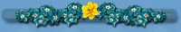

I
guess if you've come this far then you'd like to know a bit about
me. Well here goes. LOL.

I'm
Cheryl or Chezs as my husband called me when we first met back in 1970
and married on 2nd October,1971.
As
you saw in the pic on the family page we were blessed with 4 wonderful
sons, who have grown quite a bit since that pic was taken.Neil is now 27,
Bradley is 25, Rodney is 23 and Adam that gorgeous little baby is now 18...
How time flies. LOL.
It
was Adam who got me started on the Net late '99 despite the other boys
trying before then..He not only taught me the basics of the computer and
ICQ, but also how to put a page together. Thank you Adam.
A
big thanks too to Steve my husband for letting me stay on as long as I
do. He says I don't nag him nearly as much now. LOL.
I
believe there is a reason for everything that happens in our lives. Sometimes
it's hard to accept what's happening but when God sends you special angels
to be your friends it makes it so much easier to cope.
I
have been blessed to meet some of these wonderful angels called friends
on here, who help me when I need it. I have had a few problems lately and
my friends have been here to help pull me through, especially my online
daughter who showers me with her love and kindness, and my online son,
my rock, who is here to listen when I just need to talk. Thank you from
the bottom of my heart.
We
all have our cross to bear. Mine is Chronic Pain among other things, but
having the love and support of my family both online and off and the wonderful
friends to help me through the really bad times helps me cope with it.
I
hope and pray you are able to reach out and accept the special angels God
will send you during your journey through life.
|